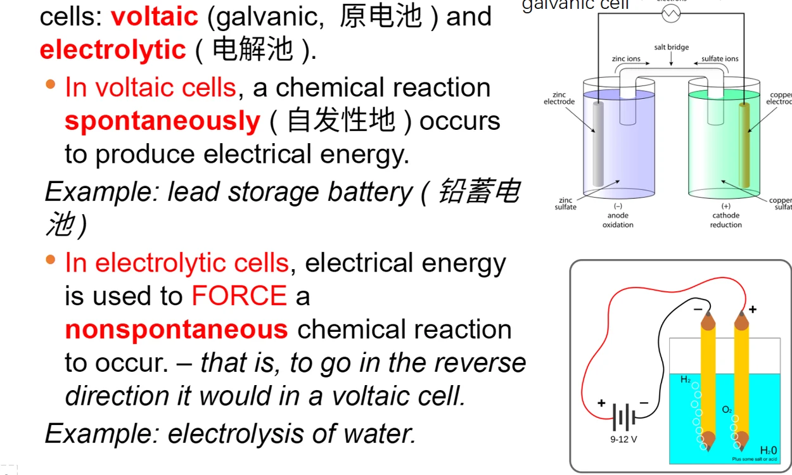
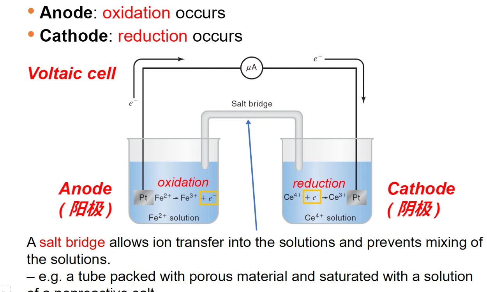
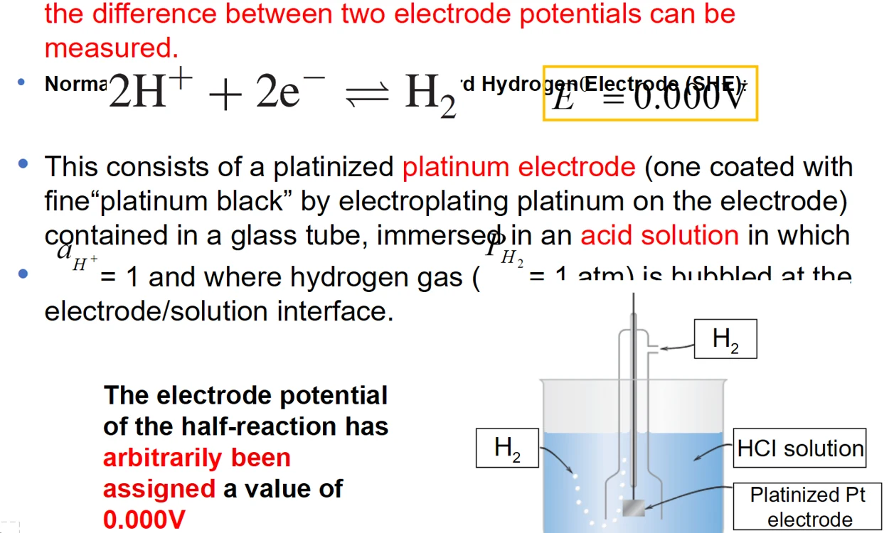
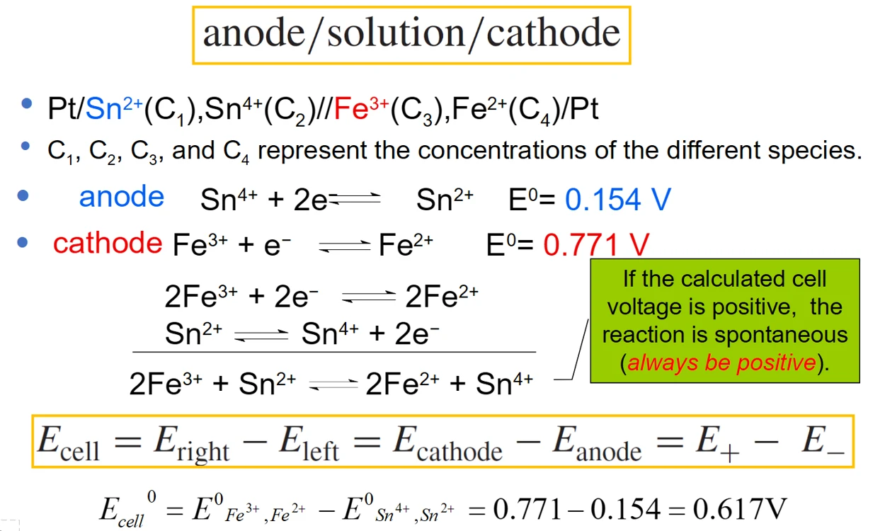
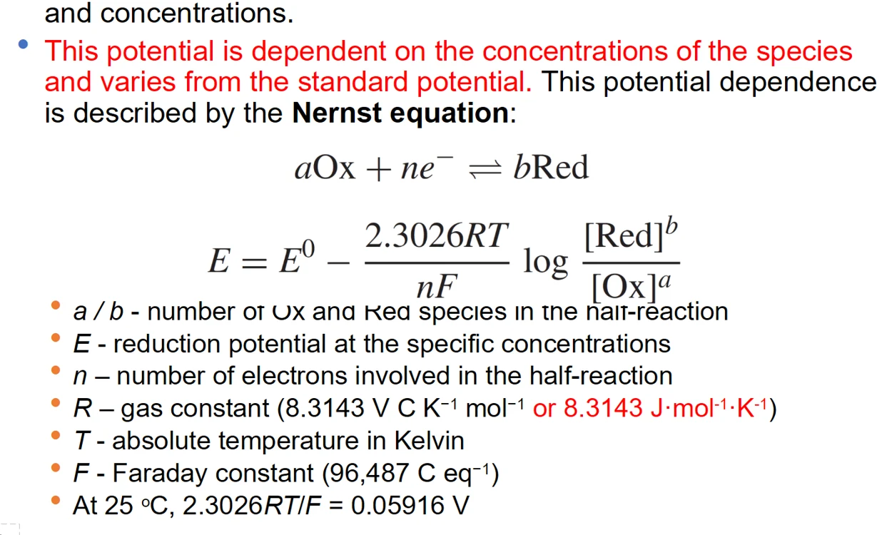
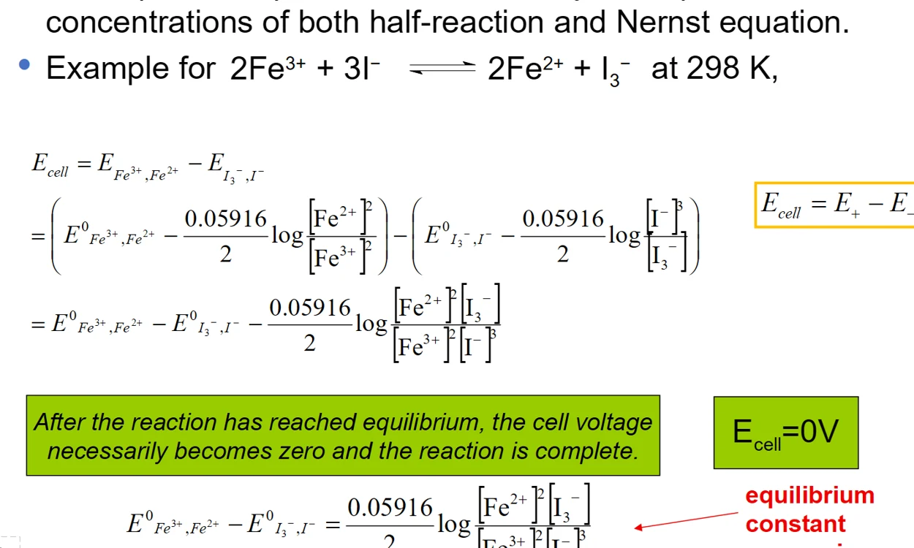
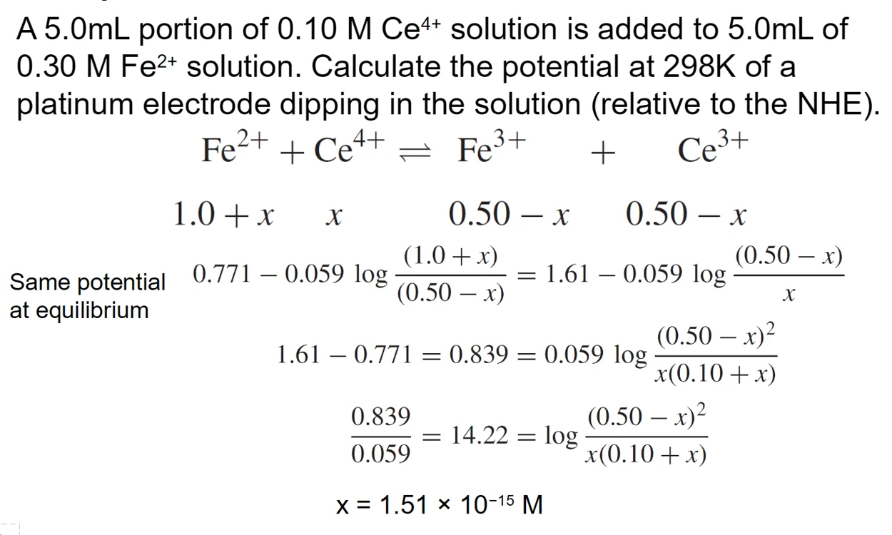
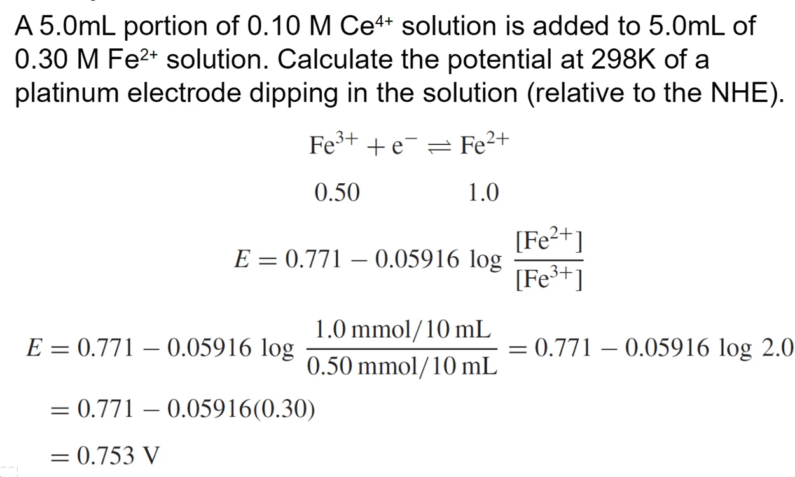

10 · ELECTROCHEMICAL CELLS & ELECTRODE POTENTIALS
电化学电池与电极电势
依课件顺序整理知识体系、公式条件、计算例题和易混概念。
10.1 · COURSE NOTES
电化学测量与氧化还原
本章依据19页课件，梳理电池、电极电势、Nernst方程与混合溶液电位。电化学分析可测电位、电荷或电流；电位法在近似零电流下响应物种活度，因此能区分游离形态与被络合的总量。氧化失电子、还原得电子；氧化剂自身还原，还原剂自身氧化。
来源：10_Electrochemistry (1).pptx，第2–18页；例题经独立复算。
10.2 · COURSE NOTES
原电池、电解池与阴阳极
原电池以自发反应输出电能；电解池借外加电能推动按指定方向非自发的反应。两类电池中始终是阳极氧化、阴极还原。原电池阳极为负、阴极为正；电解池常相反。判断先看反应，再看装置极性。
| 装置 | 阳极 | 阴极 |
|---|---|---|
| 原电池 | 氧化，负极 | 还原，正极 |
| 电解池 | 氧化，正极 | 还原，负极 |


电子经外电路从原电池阳极流向阴极；盐桥通过离子迁移维持电中性，减少两种溶液直接混合。电子不通过盐桥传输。实际测量还要考虑液接电位。
来源：10_Electrochemistry (1).pptx，第2–18页；例题经独立复算。
10.3 · COURSE NOTES
标准氢电极与还原电位
单个电极电位无法独立测量，只能相对参比电极建立标度。标准氢电极（SHE）的标准还原电位按约定为0 V；H⁺活度为1，H₂处于标准气体状态，铂提供导电表面。
课件沿用1 atm的历史表述；现代标准压力取1 bar。Nernst对数中使用无量纲活度或气体逸度相对标准态的比值，稀薄理想气体才近似用pp°。更正的标准还原电位通常对应更强氧化剂；比较时需匹配温度、介质和物种形态。

来源：10_Electrochemistry (1).pptx，第2–18页；例题经独立复算。
10.4 · COURSE NOTES
电池符号、电位与强度量
电池式按左阳极、右阴极书写，单竖线表示相界，双竖线表示液接界面或盐桥。若溶液内没有金属导体，用惰性Pt作电极。所有电位取还原电位再计算差值。
Ecell = E右 − E左
Fe³⁺+e⁻⇌Fe²⁺的E°=0.771 V，Sn⁴⁺+2e⁻⇌Sn²⁺的E°=0.154 V。配平后2Fe³⁺+Sn²⁺→2Fe²⁺+Sn⁴⁺，n=2，而E°cell=0.617 V。把Fe半反应乘2不会把它的电位乘2；电位是强度量。

来源：10_Electrochemistry (1).pptx，第2–18页；例题经独立复算。
10.5 · COURSE NOTES
Nernst方程与反应商
对a Ox+n e⁻⇌b Red，活度反应商为Q=aRedbaOxa。纯固体、纯液体标准态活度取1，参与的H⁺和气体需保留在反应商中。
E = E° − 0.05916 Vn lg Q （298.15 K）
R=8.314 J·mol−1·K−1，F≈96485 C·mol−1，n是所写半反应的电子数。仅在活度系数可近似抵消时用浓度比代替活度比。

来源：10_Electrochemistry (1).pptx，第2–18页；例题经独立复算。
10.6 · COURSE NOTES
含H⁺电对与pH效应
把H⁺遗漏会直接改变酸度响应。氢电极使用还原反应2H⁺+2e⁻⇌H₂，在298.15 K有：
pH₂=p°时，E = −0.05916 V × pH
标准气压下pH升高1，氢电极电位降低约59.16 mV。对其他电对，pH斜率还取决于H⁺计量系数与转移电子数，不能一律套59 mV。
来源：10_Electrochemistry (1).pptx，第2–18页；例题经独立复算。
10.7 · COURSE NOTES
电池电压、自由能与平衡常数
lg K = nE°cell0.05916 V （298.15 K）
在所写方向上Ecell>0对应ΔG<0。标准电位差只确定标准态驱动力；任意实际组成要代入Q。化学平衡时两电对电位相等，所以两者之差Ecell=0；它们对SHE的共同电位通常不为零。平衡也不意味着所有反应物严格耗尽。

Fe/Sn例中lgK=2×0.6170.05916≈20.86，K≈7.23×10²⁰。电位差很大说明反应强烈偏向产物，但计算残余量时仍不能令对数中的浓度等于零。
来源：10_Electrochemistry (1).pptx，第2–18页；例题经独立复算。
10.8 · COURSE NOTES
Ce⁴⁺–Fe²⁺混合例题与单位校订
5.0 mL、0.10 mol·L−1 Ce⁴⁺和5.0 mL、0.30 mol·L−1 Fe²⁺混合，按Ce⁴⁺+Fe²⁺⇌Ce³⁺+Fe³⁺先计量。初始分别0.50和1.50 mmol，反应后Fe²⁺余1.00 mmol，Fe³⁺、Ce³⁺各0.50 mmol，总体积10.0 mL。
用课件E°Ce=1.61 V和E°Fe=0.771 V，K≈1.52×10¹⁴。若设残余Ce⁴⁺的物质的量为x mmol，则：
相应残余浓度约1.64×10−16 mol·L−1。课件中间量使用mmol，却将残余x标为M，存在单位混淆；0.50、1.00也不能直接当作混合后的摩尔浓度。用Fe电对计算稳定且简便。


来源：10_Electrochemistry (1).pptx，第2–18页；例题经独立复算。
10.9 · COURSE NOTES
应试步骤与配套测验
固定顺序：配平半反应 → 标阳极和阴极 → 统一还原电位 → 写全活度反应商 → 计量反应后再求平衡 → 检查电子数、温度和单位。平衡电位、标准电位、计量点电位分别指不同概念。
本章与第8章氧化还原滴定衔接：第8章着重滴定曲线与操作，本章集中补齐电化学装置及电位标度。
来源：10_Electrochemistry (1).pptx，第2–18页；例题经独立复算。